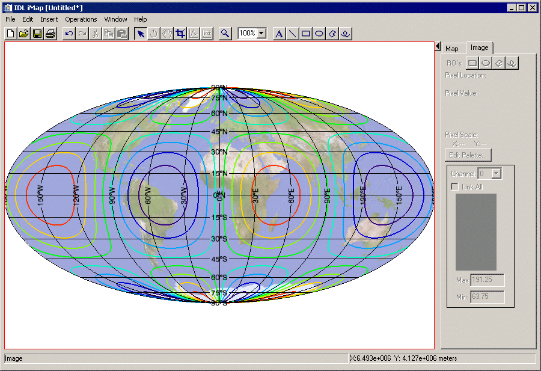

Note: Please see the MAP function, which replaces the functionality of this routine.
Note: If no arguments are specified, the IMAP procedure creates an empty iMap tool.
IMAP [, MAP_PROJECTION = string ]
IMAP [, Image [, X , Y ]] [, GEOTIFF = variable ] [, GRID_UNITS = value ] [, MAP_PROJECTION = string ]
or
IMAP [, Filename ]
IMAP [, Shapefile]
IMAP [, Z [, X , Y ]] , / CONTOUR [, GRID_UNITS = value ] [, MAP_PROJECTION = string ]
iTool Image Keywords: This procedure accepts all IIMAGE keywords. For more information, see IIMAGE .
iTool Contour Keywords: If the CONTOUR keyword is set, this procedure accepts all ICONTOUR keywords. For more information, see ICONTOUR .
Map Projection Keywords: [, CENTER_LATITUDE = value ] [, CENTER_LONGITUDE = value ] [, ELLIPSOID = string ] [, FALSE_EASTING = value ] [, FALSE_NORTHING = value ] [, HEIGHT = value ] [, HEMISPHERE ={0 | 1}] [, HOM_AZIM_LONGITUDE = value ] [, HOM_AZIM_ANGLE = value ] [, HOM_LATITUDE1 = value ] [, HOM_LATITUDE2 = value ] [, HOM_LONGITUDE1 = value ] [, HOM_LONGITUDE2 = value ] [, IS_ZONES = value ] [, IS_JUSTIFY = value ] [, LIMIT =[ latmin, lonmin, latmax, lonmax ]] [, MERCATOR_SCALE = value ] [, OEA_ANGLE = value ] [, OEA_SHAPEM = value ] [, OEA_SHAPEN = value ] [, SEMIMAJOR_AXIS = value ] [, SEMIMINOR_AXIS = value ] [, SOM_INCLINATION = value ] [, SOM_LONGITUDE = value ] [, SOM_PERIOD = value ] [, SOM_RATIO = value ] [, SOM_FLAG = value ] [, SOM_LANDSAT_NUMBER = value ] [, SOM_LANDSAT_PATH = value ] [, SPHERE_RADIUS = value ] [, STANDARD_PARALLEL = value ] [, STANDARD_PAR1 = value ] [, STANDARD_PAR2 = value ] [, TRUE_SCALE_LATITUDE = value ] [, ZONE = value ]
A vector, a two-dimensional array, or a three-dimensional array representing the sample values to be displayed as an image.
If Image is a vector:
If Image is a two-dimensional array:
Image represents an array of x , y , and z values (either [[ x 0 , y 0 , z 0 ], [ x 1 , y 1 , z 1 ], ..., [ x n , y n , z n ]] or [[ x 0 , x 1 , ..., x n ], [ y 0 , y 1 , ..., y n ], [ z 0 , z 1 , ..., z n ]] where n is the length of the other dimension). In this case, the X and Y arguments, if present, will be ignored. A dialog will be presented that allows the option of gridding the data to a regular grid (the results of which will be displayed as an indexed-color image, using the z values as the image data values).
Image represents an array of sample values to be displayed as a color-indexed image. If X and Y are provided, the sample values are defined as a function of the corresponding ( x , y ) locations; otherwise, the sample values are implicitly treated as a function of the array indices of each element of Image .
If Image is a three-dimensional array:
Image is a 3 x n x m , n x 3 x m , or n x m x 3 array representing the red, green, and blue channels of the image to be displayed.
Image is a 4 x n x m , n x 4 x m , or n x m x 4 array representing the red, green, blue, and alpha channels of the image to be displayed.
Either a vector or a two-dimensional array representing the x -coordinates of the image grid.
If the Image argument is a vector:
If the Image argument is a two-dimensional array (for which neither dimension is 3):
Each element of X specifies the x -coordinates for a column of Image (e.g., X [0] specifies the x -coordinate for Image [0, *]).
Each element of X specifies the x -coordinate of the corresponding point in Image ( X ij specifies the x -coordinate of Image ij ).
Either a vector or a two-dimensional array representing the y -coordinates of the image grid.
If the Image argument is a vector:
If the Image argument is a two-dimensional array:
Each element of Y specifies the y -coordinates for a column of Image (e.g., Y [0] specifies the y -coordinate for Image [*, 0]).
Each element of Y specifies the y -coordinate of the corresponding point in Image ( Y ij specifies the y-coordinate of Image ij ).
The name of a file that contains image data. Calling IMAP wtih the Filename argument is equivalent to calling IOPEN and passing the resulting data into IMAP as the first argument.
Note: You can not use the Filename argument with the /CONTOUR keyword.
An object reference to an IDLffShapefile object, or the file name of a Shapefile.
Note: An IDLffShapefile object is created when you use the IOPEN routine or the File > New menu item in the IDL Workbench.
A vector or two-dimensional array containing the values to be contoured. If the X and Y arguments are provided, the contour is plotted as a function of the ( x , y ) locations specified by their contents. Otherwise, the contour is generated as a function of the two-dimensional array index of each element of Z .
A vector or two-dimensional array specifying the x -coordinates for the contour surface. If X is a vector, each element of X specifies the x -coordinate for a column of Z (e.g., X [0] specifies the x -coordinate for Z [0, *]). If X is a two-dimensional array, each element of X specifies the x -coordinate of the corresponding point in Z (i.e., X ij specifies the x -coordinate for Z ij ).
A vector or two-dimensional array specifying the y -coordinates for the contour surface. If Y is a vector, each element of Y specifies the y -coordinate for a row of Z (e.g., Y [0] specifies the y -coordinate for Z [*,0]). If Y is a two-dimensional array, each element of Y specifies the y -coordinate of the corresponding point in Z ( Y ij specifies the y -coordinate for Z ij ).
Note: Keywords to the IMAP routine that correspond to the names of registered properties of the iMap tool must be specified in full, without abbreviation.
Set this keyword equal to an anonymous structure containing the GeoTIFF tags (for information on GeoTIFF tags, see the GEOTIFF keyword in the READ_TIFF function) from a GeoTIFF file. This keyword is valid only when creating an image visualization, and is ignored if the CONTOUR keyword is set.
Set this keyword to an integer specifying the units for the image or contour grid. This keyword applies only when there is a map projection inserted. It has the following values:
See the MAP_PROJECTION keywords.
A floating point value indicating the ratio of the Y dimension to the X dimension in data units. If this property is set to a nonzero value, the aspect ratio will be preserved as the visualization is stretched or shrunk. The default value is 0 for all visualizations except images, meaning that the aspect ratio is not fixed, but is allowed to change as the visualization is stretched or shrunk.
For 3-D graphics, a floating point value indicating the ratio of the Z dimension to the X and Y dimensions, in data units. If this is a nonzero value, the aspect ratio will be preserved as the visualization is stretched or shrunk. The default value is 0, meaning that the aspect ratio is not fixed, but is allowed to change as the visualization is stretched or shrunk.
Set this keyword to one of the following values to specify the axis style.
|
0 |
No axes |
|
1 |
Default Axes: at dataspace minimum values |
|
2 |
Box axes: at dataspace minimum and maximum values |
|
3 |
Crosshair axes: at dataspace median values |
Set this keyword to an RGB value specifying the color to be used as the background color for the view. The default is [255, 255, 255] (white). The BACKGROUND_COLOR keyword can be used when a tool is being created or when a new visualization is being created in an existing tool with the use of the OVERPLOT, VIEW_NUMBER or VIEW_NEXT keywords. The background color is applied to the current view. For example, if multiple views have been created with the VIEW_GRID keyword, and the VIEW_NUMBER keyword is used to create a visualization in the second view, use of the BACKGROUND_COLOR keyword would set the background color in the second view only.
Set this keyword to direct the graphical output of the visualization to a new data space in the current tool. If no tool exists, a new tool is created.
Set this keyword to the zoom factor to be used for the current view. The default value is 1.0, which represents 100%.
Set this keyword to a floating-point value giving the distance in the Z plane at which the objects in the view begin to fade into the background color. The values range from -1 (closest to the viewer) to +1 (farthest from the viewer). The default value is 0. See DEPTHCUE_DIM for examples.
Set this keyword to a floating-point value giving the distance in the Z plane at which the objects in the view have completely faded into the background color. The values range from -1 (closest to the viewer) to +1 (farthest from the viewer). The default value is 0. Some usage examples are:
Depth cue is disabled and no fading will occur.
Objects farther than Zbright will begin to fade into the background, and objects farther than Zdim will be completed faded. This is useful for simulating fog.
Objects closer than Zbright will begin to fade into the background, and objects closer than Zdim will be completely faded. This is useful for simulating lighting at a distance.
Set this keyword if values are specified in device coordinates (pixels) for the POSITION keyword. (Normalized coordinates are the default for these keywords.)
Set this keyword to a two-element vector of the form [ width , height ] to specify the dimensions of the drawing area of the specific tool in device units. The minimum width of the window correlates to the width of the menubar. The minimum window height is 100 pixels.
Set this keyword to disable the iTools splash screen. By default, the first time an iTool is run, the splash screen is displayed.
Set this keyword to automatically scale the newly-created visualization so that it fills the current view. This keyword is ignored if VIEW_ZOOM is present.
Set this keyword equal to an RGB vector specifying the title text color. The default is [0, 0, 0] (black).
This keyword applies only to the text annotation created by the TITLE keyword. It is ignored if TITLE is not specified.
Set this keyword equal to a string specifying the name of the IDL or system font to use for the title text. The default is “Helvetica”.
This keyword applies only to the text annotation created by the TITLE keyword. It is ignored if TITLE is not specified.
Set this keyword equal to an integer specifying the font size for the title text. The default is 16 pt.
This keyword applies only to the text annotation created by the TITLE keyword. It is ignored if TITLE is not specified.
Set this keyword equal to an integer specifying the font style to be used for the title text. Allowed values are:
|
0 |
Normal (the default) |
|
1 |
Bold |
|
2 |
Italic |
|
3 |
Bold Italic |
This keyword applies only to the text annotation created by the TITLE keyword. It is ignored if TITLE is not specified.
Set this keyword to a named IDL variable that will contain the iToolID for the created tool. This value can then be used to reference this tool during overplotting operations or command-line-based tool management operations.
Set this keyword to a three-element vector [ ncol , nrow , index ] to arrange graphics in a grid. The first dimension ncol is the number of columns in the grid, nrow is the number of rows, and index is the grid position at which to place the graphic (starting at element 1). This keyword is ignored if either OVERPLOT or POSITION is specified.
Set this keyword to a two-element vector of the form [ x , y ] to specify the location of the upper left-hand corner of the tool relative to the display screen, in device units.
Note: Some X Window managers explicitly ignore any request from the client for window placement.
Set this keyword to a scalar string or an array of strings that specifies the names of one or more macros to run. The macro names are retrieved and the macros are run sequentially after the iTool and (if applicable) any visualizations have been created. If a macro of the specified name does not exist, IDL generates an error and the routine exits.
Set this keyword to specify the current graphic’s margin values in the layout specified by the LAYOUT keyword. Set MARGIN to a scalar value to use the same margin on all sides, or set MARGIN to a four-element vector [ left , bottom , right , top ] to specify different margins on each side.
Margin values are expressed in normalized units ranging from 0.0 to 0.5.
This keyword is ignored if either OVERPLOT or POSITION is specified. If the DEVICE keyword is used, the values are given in device units (pixels).
Set this keyword to a string to specify the name for this visualization.
Set this keyword to cause the iTool not to prompt the user to save changes when closing the tool. The default is to prompt the user to save changes.
Set this optional keyword if input arguments are specified in normalized [0, 1] coordinates for the POSITION keyword. (Normalized coordinates are the default for these keywords.)
Set this keyword to an iToolID to direct the graphical output of the visualization to the tool specified by the provided iToolID.
Set this keyword to 1 (one) to place the graphical output of the visualization in the current tool. If no current tool exists, a new tool is created.
This iToolID can be obtained during the creation of a previous tool or from the iGetCurrent routine.
POSITION is a four-element vector that determines the location of the visualization within the iTool window. The coordinates x 0 , y 0 , represent the lower left and x 1 , y 1 , represent the upper right corners of the data space. Coordinates are expressed in normalized units ranging from 0.0 to 1.0. If the DEVICE keyword is present, the units are given in device units (pixels).
Note: When using POSITION, factor in enough space to display the title and axis labels. For example, if you use POSITION to place your visualization at 0 on the X or Y axis, any labels for that axis will not be visible.
Set this keyword to override the value specified by the IDL_GR_WIN_RENDERER (Windows) or IDL_GR_X_RENDERER (UNIX) preference for the iTool. IDL will use the specified graphics renderer when drawing objects within the iTool window. Valid values are:
|
Value |
Description |
|
0 |
Use platform native OpenGL |
|
1 |
Use IDL’s software implementation |
If your platform does not have a native OpenGL implementation, IDL uses its own software implementation regardless of the value of this property.
Set this keyword to indicate whether the visualizations should be stretched to fit within the view. The default value is 1 (True).
Set this keyword equal to a string that specifies the name of a user-defined or a system style. If a style of the specified name does not exist, IDL generates an error and the routine exits.
The style is applied using the following rules:
Set this keyword to a string specifying a title for the newly-created visualization. The text annotation will be added to the dataspace containing the new visualization. If the TITLE is specified, you can also specify any of the FONT_COLOR, FONT_NAME, FONT_SIZE, and FONT_STYLE keywords to control the title appearance.
Note: Prior to IDL version 7.1, the TITLE keyword specified the title for the iTool window rather than for the visualization. Use the WINDOW_TITLE keyword to create a window title.
Set this keyword to a two-element vector of the form [ columns , rows ] to specify the view layout within the new tool. This keyword is only used if a new tool is being created (for example, if OVERPLOT, VIEW_NEXT, or VIEW_NUMBER are specified then VIEW_GRID is ignored).
Set this keyword to change the view selection to the next view following the currently-selected view before issuing any graphical commands. If the currently-selected view is the last one in the layout, then /VIEW_NEXT will cause the first view in the layout to become selected. This keyword is ignored if no current tool exists.
Note: The contents of the newly-selected view will be emptied unless /OVERPLOT is set.
Set this keyword to change the currently-selected view to the view specified by the VIEW_NUMBER before issuing any graphical commands. The view number starts at 1, and corresponds to the position of the view within the graphics container (not necessarily the position on the screen). This keyword is ignored if no current tool exists.
Note: The contents of the newly-selected view will be emptied unless /OVERPLOT is set.
Set this keyword equal to a scalar string that will be placed in a text annotation centered horizontally in the current view, near the top. The text will be created with the properties (size, style, color, etc.) defined for text annotations in the current tool style.
Set this keyword to a floating-point number giving the initial view zoom factor. For example, setting VIEW_ZOOM to 2.0 would give an initial zoom of 200%. The default is 1.0.
Set this keyword to a string to specify a title for the tool window. The title is displayed in the title bar of the tool.
The index of the linestyle to be used for plot tickmarks and grids (i.e., when [XYZ]TICKLEN is set to 1.0). See LINESTYLE for a list of linestyles.
Set this keyword to an integer representing the number of major tick marks. The default is -1, specifying that IDL will compute the number of tickmarks. Setting MAJOR equal to zero suppresses major tickmarks entirely. ZMAJOR is for three-dimensional plots only.
Set this keyword to an integer representing the number of minor tick marks. The default is -1, specifying that IDL will compute the number of tickmarks. Setting MINOR equal to zero suppresses minor tickmarks entirely. ZMINOR is for three-dimensional plots only.
Set this keyword to the desired data range of the axis, a 2-element vector. The first element is the axis minimum, and the second is the maximum. ZRANGE is for three-dimensional plots only.
The axis range style. The valid values are:
(0) Set the axes to have a "nice" range (based on the tick marks). This is the default value for all visualizations except for Images and Maps.
(1) Force the axes ranges to exactly match the data. This is the default value for Images and Maps.
(2) Pad the axes to extend slightly beyond the "nice" range.
(3) Pad the axes to extend slightly beyond the exact data range.
The [XYZ]RANGE property takes precedence over this property.
Set this keyword to a floating-point scale ratio specifying the length of minor tick marks relative to the length of major tick marks. The default is 0.5, specifying that the minor tick mark is one-half the length of the major tick mark. ZSUBTICKLEN is for three-dimensional plots only.
Set this keyword to an RGB value specifying the color for the axis text. The default value is [0, 0, 0] (black). ZTEXT_COLOR is for three-dimensional plots only.
Set this keyword to control the position of axis text labels, including tick mark data values and axis titles. Possible values are:
|
0 |
Position text below a horizontal axis, or to the left of a vertical axis. This is the default.
|
|
1 |
Position text above a horizontal axis, or to the right of a vertical axis. |
Note: The Z axis is treated as a vertical axis.
See [XYZ]TICKDIR to control the direction of axis tick marks.
Set this keyword to control the direction of axis tick marks. Possible values are:
|
0 |
Draw the tick marks facing inwards. For horizontal axes, this sets the TICKDIR property of the bottom axis to 0 and TICKDIR property of the top axis to 1. For vertical axes, this sets the TICKDIR property of the left axis to 0 and TICKDIR property of the right axis to1. This is the default. |
|
1 |
Draw the tick marks facing outwards. For horizontal axes, this sets the TICKDIR property of the bottom axis to 1and TICKDIR property of the top axis to 0. For vertical axes, this sets the TICKDIR property of the left axis to 1 and TICKDIR property of the right axis to 0. |
Note: The Z axis is treated as a vertical axis.
See [XYZ]TEXTPOS to control the position of tick mark data values and axis titles.
Set this keyword equal to one of the following integers, which represent the type of font to be used for the axis text:
ZTICKFONT_INDEX is for three-dimensional plots only.
Tip:
Available fonts also include any additional TrueType fonts available to IDL. Instead of using the [XYZ]TICKFONT_INDEX keyword, to access these additional fonts you may wish to create an iTools Style that sets the desired font for your axes.
Set this keyword to a floating-point integer representing the point size of the font used for the axis text. The default is 12.0 points. ZTICKFONT_SIZE is for three-dimensional plots only.
Set this keyword equal to one of the following integers, which represent the style of font to be used for the axis text:
ZTICKFONT_STYLE is for three-dimensional plots only.
Set this keyword to a string, or an array of strings, in which each string represents a format string or the name of a function to be used to format the tick mark labels. If an array is provided, each string corresponds to a level of the axis. The TICKUNITS keyword determines the number of levels for an axis.
If the string begins with an open parenthesis, it is treated as a standard format string. If the string does not begin with an open parenthesis, it is interpreted as the name of a callback function to be used to generate tick mark labels. This function is defined with either three or four parameters, depending on whether TICKUNITS is specified.
The callback function is called with four parameters: Axis , Index , Value , and Level , where:
ZTICKFORMAT is for three-dimensional plots only.
Set this keyword to a floating-point scalar indicating the interval between major tick marks for the first axis level. The default value is computed according to the axis [XYZ]RANGE and the number of major tick marks ([XYZ]MAJOR). The value of this keyword takes precedence over the value set for the [XYZ]MAJOR keyword.
For example, if TICKUNITS = ['S', 'H', 'D'], and TICKINTERVAL = 30, then the interval between major ticks for the first axis level will be 30 seconds.
ZTICKINTERVAL is for three-dimensional plots only.
Set this keyword to integer scalar that indicates the tick layout style to be used to draw each level of the axis.
Valid values include:
ZTICKLAYOUT is for three-dimensional plots only.
Note: For all tick layout styles, at least one tick label will appear on each level of the axis (even if no major tick marks fall along the axis line). If there are no major tick marks, the single tick label will be centered along the axis.
Set this keyword to a floating-point value that specifies the length of each major tick mark, measured in data units. The recommended, and default, tick mark length is 0.2. IDL converts, maintains, and returns this data as double-precision floating-point. ZTICKLEN is for three-dimensional plots only.
Set this keyword to a string array of up to 30 elements that controls the annotation of each tick mark. ZTICKNAME is for three-dimensional plots only.
Set this keyword to a string (or a vector of strings) indicating the units to be used for axis tick labeling. If more than one unit is provided, the axis will be drawn in multiple levels, one level per unit.
The order in which the strings appear in the vector determines the order in which the corresponding unit levels will be drawn. The first string corresponds to the first level (the level nearest to the primary axis line).
Valid unit strings include:
If any of the time units are utilized, then the tick values are interpreted as Julian date/time values. Note that the singular form of each of the time value strings is also acceptable (e.g, TICKUNITS = 'Day' is equivalent to TICKUNITS = 'Days').
ZTICKUNITS is for three-dimensional plots only.
Note: Julian values must be in the range -1095 to 1827933925, which corresponds to calendar dates 1 Jan 4716 B.C.E. and 31 Dec 5000000 C.E., respectively.
Set this keyword to a floating-point vector of data values representing the values at each tick mark. If TICKVALUES is set to 0, the default, IDL computes the tick values based on the axis range and the number of major ticks. IDL converts, maintains, and returns this data as double-precision floating-point. ZTICKVALUES is for three-dimensional plots only.
Set this keyword to a string representing the title of the specified axis. ZTITLE is for three-dimensional plots only.
Set this keyword to 1 (True) so that visualizations change size when the window is resized. The default value is 0 (False), which ensures that visualizations remain the same size regardless of the window dimensions.
Set this keyword to a string specifying the name of an IDL GCTP map projection to use for the initial projection. Available projections include:
|
Alaska Conformal Albers Equal Area Azimuthal Equidistant Cylindrical Equal Area Equidistant Conic Equirectangular Geographic Gnomonic Hammer Hotine Oblique Mercator Integerized Sinusoidal |
Interrupted Goode Interrupted Mollweide Lambert Azimuthal Lambert Conformal Conic Mercator Miller Cylindrical Mollweide Near Side Perspective Oblated Equal Area Orthographic Polar Stereographic |
Polyconic Robinson Sinusoidal Space Oblique Mercator State Plane Stereographic Transverse Mercator UTM Van der Grinten Wagner IV Wagner VII |
Each of the above map projections requires other keywords to define the projection. The following keywords are available:
|
CENTER_AZIMUTH CENTER_LATITUDE CENTER_LONGITUDE ELLIPSOID FALSE_EASTING FALSE_NORTHING HEIGHT HOM_AZIM_ANGLE HOM_AZIM_LONGITUDE HOM_LATITUDE1 HOM_LATITUDE2 HOM_LONGITUDE1 HOM_LONGITUDE2 |
IS_JUSTIFY IS_ZONES LIMIT MERCATOR_SCALE OEA_ANGLE OEA_SHAPEM OEA_SHAPEN SAT_TILT SEMIMAJOR_AXIS SEMIMINOR_AXIS SOM_FLAG
|
SOM_INCLINATION SOM_LANDSAT_NUMBER SOM_LANDSAT_PATH SOM_LONGITUDE SOM_PERIOD SOM_RATIO SPHERE_RADIUS STANDARD_PAR1 STANDARD_PAR2 STANDARD_PARALLEL TRUE_SCALE_LATITUDE ZONE
|
See the table of GCTP map projections within the MAP_PROJ_INIT function for descriptions of these keywords.
See IIMAGE for the description of the following keywords:
ALPHA_CHANNEL , BLUE_CHANNEL , CHANNEL , CLIP_PLANES , GREEN_CHANNEL , GRID_UNITS , HIDE , IMAGE_DIMENSIONS , IMAGE_LOCATION , INTERPOLATE , ORDER , RED_CHANNEL , RGB_TABLE , ZVALUE
Set this keyword to create a contour visualization from the supplied data. By default, the procedure creates an image visualization.
See ICONTOUR for the description of the following keywords:
AM_PM , ANISOTROPY , C_COLOR , C_FILL_PATTERN , C_LABEL_INTERVAL , C_LABEL_NOGAPS , C_LABEL_OBJECTS , C_LABEL_SHOW , C_LINESTYLE , C_THICK , C_USE_LABEL_COLOR , C_USE_LABEL_ORIENTATION , C_VALUE , CLIP_PLANES , COLOR , DAYS_OF_WEEK , DEPTH_OFFSET , DOWNHILL , FILL , GRID_UNITS , HIDE , LABEL_FONT , LABEL_FORMAT , LABEL_FRMTDATA , LABEL_UNITS , MAX_VALUE , MIN_VALUE , MONTHS , N_LEVELS , PLANAR , RGB_INDICES , RGB_TABLE , SHADE_RANGE , SHADING , TICKINTERVAL , TICKLEN , USE_TEXT_ALIGNMENTS , ZVALUE
In the IDL Intelligent Tools system, data can be imported from the IDL Command Line (as described in Examples 2 and 3) or data can be imported via the File menu in the iTool window.
IMAP, MAP_PROJECTION='Lambert'
This command opens a new iMap tool with the Lambert Conformal Conic projection loaded.
|
|
file = FILEPATH('avhrr.png', SUBDIRECTORY=['examples','data'])
data = READ_PNG(file, r, g, b)
IMAP, data, LIMIT=[-90,-180,90,180], $
MAP_PROJECTION='Mollweide', RGB_TABLE=[[r],[g],[b]], $
IMAGE_TRANSPARENCY=50, GRID_UNITS=2, $
IMAGE_LOCATION=[-180,-90], IMAGE_DIMENSIONS=[360,180]
This series of commands opens a new iMap tool and loads an image of the world, registered in degrees, into a Mollweide map projection (above).
|
|
This example builds on Example 2, adding contours to the world image in the Mollweide projection.
clons = FINDGEN(360) - 179.5
clats = FINDGEN(180) - 89.5
cdata = SIN(clons/30) # COS(clats/30)
IMAP, cdata, clons, clats, /CONTOUR, /OVERPLOT, $
RGB_TABLE=39, GRID_UNITS=2, $
N_LEVELS=10, C_THICK=REPLICATE(2,10)
This series of commands plots the contour data atop Example 2’s display .
|
 |
This example uses IMAP with the GEOTIFF keyword to visualize a TIFF image with embedded GEOTIFF metadata.
; Define a variable to hold the image file
dataFilePath = FILEPATH('boulder.tif', $
SUBDIR=['examples','data'])
; Run READ_TIFF with the geotiff keyword
; to expose the geotiff structure
data_variable=READ_TIFF(dataFilePath, GEOTIFF=GeoKeys)
Note: You can also open image files using File > Open File or using the IOPEN command. If you use File > Open File , IDL defines the variable names. If you use IOPEN, you define the names of the data and GeoTIFF variables.
You can view the structure of the GeoKeys variable that holds the geotiff structure by looking at the Variables view or by typing the following at the command line.
HELP, GeoKeys, /STRUCTURE
Now you can visualize the image with the GeoTIFF information using the GEOTIFF keyword with IMAP:
; Use IMAP with the data and GeoTIFF variables defined previously
IMAP, data_variable, GEOTIFF=GeoKeys
|
6.1 |
Introduced |
|
6.2 |
Added DISPLAY_SPLASH_SCREEN and VIEW_TITLE keywords |
|
6.4 |
Added the ANISTROPIC_SCALE_2D, ANISTROPIC_SCALE_3D, FIT_TO_VIEW, GEOTIFF, RENDERER, SCALE_ISOTROPIC, VIEW_ZOOM keywords.
|
|
7.1 |
Deprecated the DATUM keyword Added the ELLIPSOID keyword Added the Filename argument. Added the FONT_COLOR, FONT_NAME, FONT_SIZE, FONT_STYLE, WINDOW_TITLE, CURRENT_ZOOM, DEPTHCUE_BRIGHT, DEPTHCUE_DIM, STRETCH_TO_FIT, XMARGIN, YMARGIN, and ZOOM_ON_RESIZE keywords. Modified behavior of the TITLE keyword to create a text annotation along with the visualization.
|
|
8.0 |
Added AXIS_STYLE, DEVICE, NORMAL, POSITION, [XYZ]TEXTPOS, [XYZ]TICKDIR, LAYOUT, MARGIN keywords. Deprecated XMARGIN, YMARGIN keywords.
|
|
8.1 |
Added ASPECT_RATIO, ASPECT_Z, [XYZ]STYLE. Deprecated ANISOTROPIC_SCALE_2D, ANISOTROPIC_SCALE_3D, SCALE_ISOTROPIC keywords.
|